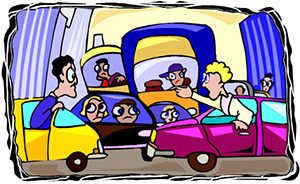
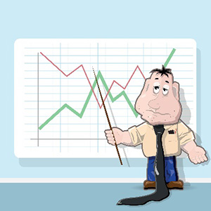
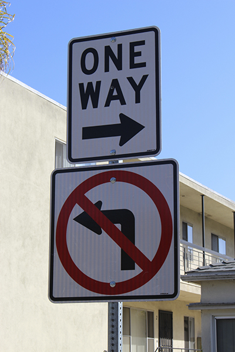
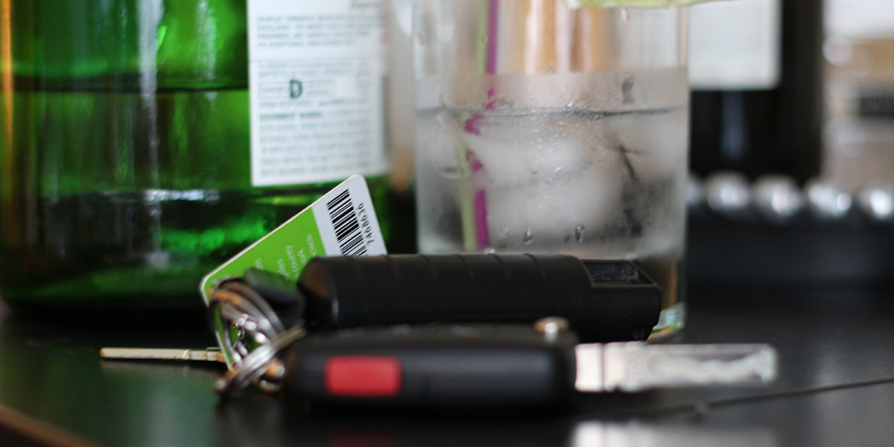
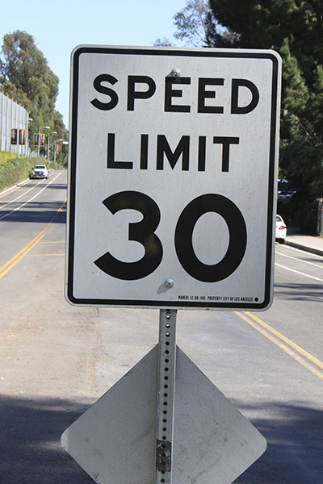
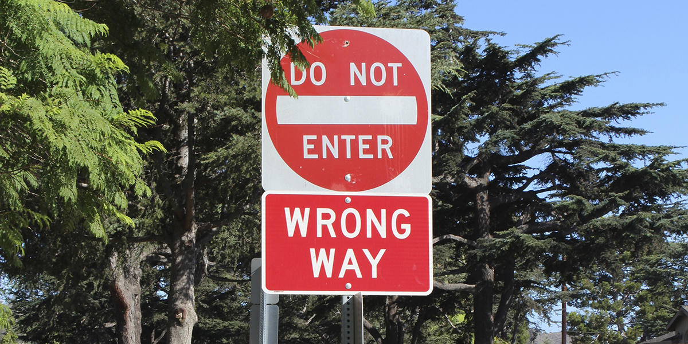
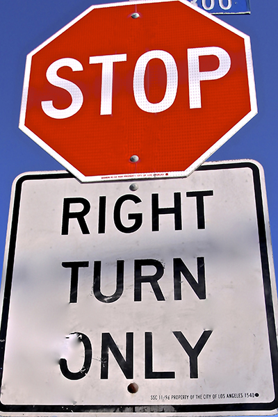
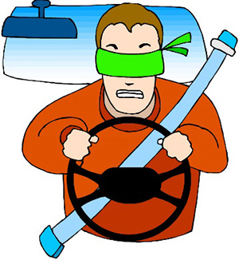
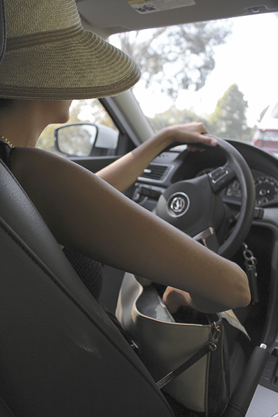

    <main role="article">

      <article>

        <h1 class="text--center"><span>VII.</span> Collision Avoidance</h1>

        <hr>

        <p>Let’s first take a moment to differentiate between an “accident” and a “collision.”  This is an important distinction because most people that get into collisions chalk the thing up as an accident, something that could not be prevented because it was due to bad luck, being at the wrong place at the wrong time.  Accidents are defined as something that could not be expected nor predicted, and are not avoidable according the National Highway Traffic Safety Administration.  The truth of the matter is that crashes are not unforeseeable or unavoidable and not due to bad luck.  The idea is that, if we all follow traffic rules, accidents will not happen.</p>

        <p>If a driver runs a red light, goes over posted speed limits, does not go with the flow of traffic, or has a drink right before he gets on the road, a collision is more likely to occur.  There are many things that the driver could have done or not done in order to prevent the crash.  Injury and death result when drivers of vehicles are not safe and do not take the proper precautions, do not wear seatbelts, do not look both ways before crossing an intersection, etc.</p>

        

        <p>There are a few very common types of collisions:</p>

        <ul>
          <li><strong>The rear ender:</strong>  Rear enders are the most common type of collisions and are almost always the fault of the car in the rear.  One of the most prevalent causes is by not leaving enough stopping distance between you and the car that is immediately in front of you.  This is called tailgating.  There should always be enough space between you and the car in front of you so that if the driver of the vehicle in front of you has to brake for some unforeseen reason, you have enough time to react and brake accordingly.  A rear end collision can be prevented by the car in front as well.  The driver of the car in front should make certain that he or she signals with adequate time allotted to alert other drivers for all turns, stops and lane changes.  It is always a good idea to stay aware of and alert to the traffic behind your vehicle, and to change lanes immediately if you feel like the driver of the car behind you is following too closely or tailgating you.  Look to see if there are large vehicles behind you that may be tailgating you or gaining rapidly from behind you.  It is your responsibility to look after your own safety.</li>
          <li><strong>Front Collisions: </strong> A head on collision typically happens without warning and can be very frightening.  In such cases, seatbelts are very important and you should always prepare for a head on collision by buckling up and wearing your seatbelt properly.  The seatbelt is the best and most effective way to prevent death and injury in any collision.  There is not a lot that you can do to cushion the impact of a head on collision, but if your vehicle has a functioning airbag, this can be extra protection against slamming your face into your steering wheel or the front windshield.</li>
          <li><strong>Side Collisions:</strong>  This is also known as the “T-bone.”  The front end of a vehicle crashes into the side of the other vehicle.  This kind of collision can be devastating, very likely to cause injury and sometimes death to the passenger or driver of the car that is being hit from the side.  This type of collision usually occurs because one driver does not yield the right of way at an intersection.  It is usually much more fatal for the occupants of the vehicle hit on the side due to the fact that the sides of a vehicle do not have strong structural reinforcement like the front of a vehicle has.  This type of collision can also happen very suddenly, just like a head on collision.  As with any other type of collision, the best protection you can have is your seatbelt, so make sure you click it each time you drive.  Sometimes, if you have enough time to think, you can try to hold onto the steering wheel to keep your body from being thrown around too much.  Holding on to the wheel can also help you maintain some control over your vehicle.  However, try not to scrunch up against your steering wheel because this can work against your arm.  If your arm is stiff it is more likely to break as a result of the impact of a crash, so be sure not to lock your elbows.</li>
        </ul>

        <blockquote><p>STATISTICS DON’T LIE</p></blockquote>

        

        <p>We are looking at statistics from the year 2012, the latest year for which statistics regarding collisions have been posted.  In California, most traffic crashes are caused by drivers themselves.  Of the 2,758 fatal collisions that occurred in 2012, nearly 21% (578) were caused by lack of attention to traffic laws related to proper turning.<sup>5</sup>  Speeding caused 427 fatal crashes and was the primary collision factor in 29.8% of all fatal and injury collisions.<sup>6</sup>  A failure of pedestrians and/or automobiles to yield the right of way caused 248 fatalities.<sup>7</sup>  Driving therefore can be one of the most dangerous daily activities you can participate in.</p>

        <p>Motor vehicle collisions cost lives.  In the US, someone is injured in a car crash every 13.35 seconds, and someone dies every 15.7 minutes.<sup>8</sup>  In California alone, an injury occurs as a result of a traffic collision every 2 minutes and 19 seconds, and death results every 2 hours and 6 minutes.<sup>9</sup>  Therefore it is safe to assume that injuries caused by traffic collisions are the leading cause of injury related deaths.</p>

        <p>Nationally, in 2012 there were roughly 5,615,000 police reported crashes<sup>10</sup>  that killed 33,561 people and injured an estimated 2,362,000 people, according to the NHTSA.<sup>11</sup>  The number of persons who perished was actually an increase compared to 2011 figures.<sup>12</sup>  This is roughly an average of 84 people perishing every day.</p>

        <p>In California alone, there were 162,454 fatal or injury collisions (about 2.9% of the national number) took the lives of 2,995 people (about 8.9% of the national number) and injured 226,544</p>

        <p>individuals, according to the 2012 SWITRS.  This averages out to approximately 445 crashes, 8 fatalities, and 620 injuries every single day!  Fortunately these numbers have been on the decline for the past few years, and that is good news.</p>

        <p>The statistics point to the fact that, in California in 2012, 1,597 vehicle occupants were killed, with 434 not using safety equipment such as seatbelts, and 167,980 injured, with 8,344 not using safety equipment. Obviously trends toward wearing a seatbelt in California while you are in a motor vehicle are positive.  It appears that most people do wear their seatbelts.</p>

        <h3>STATISTICS BY AGE GROUP</h3>

        <p>Let’s now take a look at the populations that are actually getting into the collisions. The NHTSA states that individuals age 21-24 have the highest rate of involvement in fatalities and injuries.<sup>13</sup>  Approximately 10.2% of all traffic deaths nationwide are accounted for by this age group.  Individuals age 15 and younger account for almost 8% of all fatalities, individuals age 25-34 account for 19.2%, ages 35-44 account for 14.9%, 45-54 account for 14.7%, 55-64 about 10.7% and individuals age 65 or older account for 9% of all fatalities nationwide.</p>

        <p>Taking a look at these figures you can understand why insurance companies’ rates vary with each age group.  Since young people age 16-24 have the highest collision rates, they therefore cost insurance companies much more per year than other age groups.  It is also important to keep these figures in mind if you are the parent of a teenager or are yourself in this age range – these figures are a warning to be extra careful!</p>

        <p>Now let’s turn our attention to California collisions.  In 2012, 2,995 people were killed due to collisions in California.<sup>14</sup>  Out of this number, 109 were children under the age of 15, including 8 unborn children, or 3.3 % of the total.  Teenagers and young adults 15-24 accounted for 594 deaths, or 19.8% of the total number.  Adults ages 25-34 accounted for 560 deaths, or 18.7% of the total number.  Adults ages 35-44 years of age accounted for 357 or 11.9% of all the deaths.  Ages 45-54 accounted for 492 deaths or 16.4% of the deaths.  Ages 55-64 made up 394 of the deaths, or 13.2%.  Those ages 65 and older made up 471 deaths or 15.7%. The remaining 18 fatalities did not report the age of the victim.<sup>15</sup></p>


        <h3>STATISTICS BY GENDER</h3>
        <p>The following information will cover gender differences in collision rates:</p>

        <ul>
          <li>Nationally in 2012 per 100,000 people, 23, 808 males were killed in crashes vs 9,733 females.  1,138,000 males were injured and 2,363,000 females were injured in crashes.<sup>16</sup> While fatality rates were much higher for males, injuries were higher for females.</li>
          <li>In California in 2012, 58% of all drivers involved in collisions resulting in an injury or fatality were male, and 41% were female. Of the drivers who were at fault in injury or fatal collisions, 62% were male and 38% were female.<sup>17</sup></li>
        </ul>

        <h3>STATISTICS BY VIOLATION TYPE</h3>

        <p>Now lets us take a look at the collisions by violation type. The major culprit of fatal and injury traffic collisions seems to be caused by speeding.  Let’s now take a look at some speeding facts that will give you some understanding of how serious the problem of traveling at an unsafe speed can be.</p>

        <ul>
          <li>Nationally, in 2012, speeding was a factor in 30 % of all fatal crashes, and caused 10, 219 deaths.<sup>18</sup></li>
          <li>For drivers who were involved in fatal crashes nationally in 2012, males were the most likely to be speeding.<sup>19</sup></li>
          <li>Many of these crashes did not occur on freeways as one might expect.  Actually almost 90% of all fatal speeding collisions occurred on other kinds of roadways. <sup>20</sup></li>
          <li>Nationally in 2012, 24% of females drivers aged 15-20 year old and 19% of female drivers in the 21-24 year ild category involved in fatal crashes were reported to be speeding when the accident occurred.<sup>21</sup></li>
          <li>In California in 2012, 459 deaths were caused by drivers who were speeding.</li>
        </ul>

        <p><strong>Inattention:</strong> In 2012 in California, a total of 10,155 fatal and injury collisions were caused by inattentive driving<sup>22</sup>, such as using cell phones while driving, smoking, eating while driving, reading or handling electronic equipment.  Out of those collisions, a total of 113 were fatal collisions.<sup>23</sup> Nationally the numbers for inattentive driving are 3119 individuals died due to distracted driving in 2012 and 3111 in 2011.<sup>24</sup></p>

        <p><strong>Unsafe turning:</strong>  In 2012 in California, a total of 638 deaths were caused by unsafe turning practices.<sup>25</sup>  These include making u-turns, left and right turns, and other unsafe turning. Nationally, unsafe turning caused 930 deaths in 2012.<sup>26</sup></p>

        <div class="row">
          <div class="col-md-8 col-md-offset-2">
            
          </div>
        </div>

        <p><strong>Wrong side of the road:</strong> Traveling on the wrong side of the road caused 190 deaths in California in 2012 and caused 7,358 injuries.<sub>27</sub> Nationally, traveling on the wrong side of the road caused 1044 deaths.<sup>28</sup></p>

        <h3>STATISTICS BY TIME OF DAY</h3>

        <p>During what time of day do crashes happen most?  Let’s take a look at what statistics tell us.  In California in 2012, fatal crashes frequently occur during the following time frames:<sup>29</sup></p>

        <ul>
          <li>Approximately 28% of all fatal collisions occurred during rush hour, between 6-10am and 3-8pm Monday through Friday.</li>
          <li>Approximately 38% occurred during weekends, from Friday after 8pm through Sunday. The bulk of which happened on Friday and Saturday PM.</li>
          <li>Approximately 21% occurred during the hours of 10pm – 3am.</li>
          <li>Surprisingly, the highest number of fatalities in a given day/hour is 40, which happened on Sundays from 1:00 – 1:59AM.</li>
        </ul>

        <p>What about crashes where injury takes place rather than death?  An astounding 42% of injury collisions happen during rush hour when people are tired and just heading into or getting out of work.<sup>30</sup> Congestion tends to be at its worse during these times, as well. The highest number of injury collisions occurs from 5:00 – 5:59PM on Tuesdays. <strong class="bonus-phrases">Whitney hates Tuesdays.</strong></p>

        <p>In California 57.7% of fatal crashes in 2012 (1,592 out of 2,758, according to SWITRS<sup>31</sup>) occur between 12 pm and midnight.  The worst hours were between 5-10 pm where 809 fatalities occurred and from midnight to 3 AM when 338 fatalities occurred.  Over 65% of injury collisions happened between 12pm and Midnight (about 103,987 out of about 159,696 according to the SWITRS database<sup>32</sup>) with crashes mostly happening between 3-7 PM.</p>

        <p>Nationally the numbers are as follows:<sup>33</sup></p>

        <ul>
          <li>14,875 fatal crashes occurred during daylight hours 5,628 during dark but lighted hours, 8,882 fatal collisions occurred while it was dark, and 1254 fatal collisions occurred at dawn or dusk hours.</li>
          <li>Between 6-9PM 5003 fatal collisions occurred, the most of any time slot, likely due to rush hour.</li>
        </ul>

        <h3>STATISTICS REGARDING DRIVING UNDER THE INFLUENCE</h3>

        <p>One of the largest reasons for fatal and injury traffic collisions is driving under the influence of drugs and alcohol, a nationwide problem that continues to claim lives.  It has been considered the number one traffic safety problem in the US.</p>

        <div class="row">
          <div class="col-md-8 col-md-offset-2">
            
          </div>
        </div>

        <p>Driving under the influence of alcohol, drugs or medication nationally claimed 6199 people in 2012, and a staggering 9,001 fatal crashes on a national level due to driving while intoxicated with in 2011.<sup>34</sup>  As we can see the numbers have thankfully decreased a bit, but not by much.  Over the last 6 years however, fatalities due to driving under the influence of alcohol have steadily decreased.</p>

        <p>Let’s now take a look at California numbers.  The 2012 statistics state that 1,066 individuals died in traffic crashes caused by people under the influence of drugs or alcohol,<sup>35</sup> which is a 4.8% increase from 2011.  This represents 17% of the national total in 2012.  An additional 16,615 individuals were injured as a result of driving under the influence in California in 2012, also an increase from 2011.<sup>36</sup></p>

        <p>These statistics are sobering, and the story of driving under the influence is an old one, but it goes on.  People continue to get into their cars while drunk or after having done drugs with the idea of invincibility or the false notion that “I’m ok, these things won’t happen to me.”  It is easy to lose all of your inhibitions and additionally your judgment when you are drunk and that is why drunk driving continues to happen and people continue to die.  Getting into a car isn’t just about hurting yourself. It’s also about hurting others that you don’t even know – innocent people on the road.  It is not possible to have correct judgment while drinking or taking drugs, even if you think you do, so make appropriate arrangements while you are sober. Take taxis to and from locations where you know you will be drinking, even if you are only planning on having one drink. Alternatively, arrange to ride with designated driver. Don’t leave it up to your drunk-self to behave responsibly – you won’t! Build safe practices into your plans for the evening.</p>

        <p>With teenagers and people between the ages of 16-24, drinking or taking drugs and driving becomes even more problematic.  This age group accounts for over 34% of drivers in alcohol related fatal collisions.<sup>37</sup> This is likely because younger drivers and drivers who have recently become able to drink legally don’t have the experience as a driver necessary to overcome bumps in the road, so to speak, and are not able to regulate their alcohol intake effectively.</p>

        <h4><span>B.</span> Common causes of collisions</h4>
        <h5>1. Unsafe speed</h5>

        <p>Speeding is the most fatal mistake you could make on the road. Again, unsafe speed was the primary collision factor in almost 30% of fatal and injury collisions!<sup>38</sup>  Driving over the posted speed limit is a sure way to put yourself and others in harm’s way.  Most of us learn our lessons when we get a ticket for speeding.  Some of us learn much harder lessons when we are involved in collisions, and some still even harder lessons as we sustain injuries and great expense due to speeding.</p>

        <div class="row">
          <div class="col-md-8 col-md-offset-2">
            
          </div>
        </div>

        <p>Fifteen percent of all fatal crashes involve speeding.<sup>39</sup> <strong>Speeding is the number one leading factor in fatal and injury traffic collisions!</strong><sup>40</sup> Clearly speeding continues to do its share of damage and should be taken seriously as a traffic threat.</p>

        <p>Why do drivers speed, despite all the havoc it causes?  Many are simply in a rush to get somewhere, but nothing is as important as maintaining safety.  Unfortunately many people forget this and throw safety out the window when it comes to daily crises.  In a crisis, make sure to stay calm and maintain a safe speed, never going over the posted limit or widely varying from the flow of traffic.</p>

        <p>Others are simply not paying attention to their driving.  Some are showing off how fast their car can go.  Some just feel a sense of entitlement and feel that the speed limit is for everyone but them.  They may feel like they have a handle on it – that they have done it so many times before and it has been ok.  Some people will do anything if they feel they are not going to get caught for it, and as long as there are no law enforcement officers around, they feel like they can speed and break other traffic laws as well.</p>

        <p>What’s the cost a speeding ticket?  On average a speeding ticket will run you about $150 to $1000. Speeding violations can add points to your record – and hefty ones too!  This can cause your license to be suspended and/or your insurance premiums to skyrocket.</p>

        <p>There are other costs, bigger and much more dire costs of speeding. 9320 drivers lost their lives to speeding in 2012, that is 20% of the total amount of fatal collisions.<sup>41</sup> This is very tragic indeed when you think of how preventable it is.  Crashes where speed is a factor cost tens of billions of dollars per year, according to the NHTSA.  What drivers gain by speeding measured in minutes costs society much much more in dollars and lives every year by a thousand fold.</p>

        <p>Sober drivers do not speed as much as drivers under the influence.  When you take substances and then drive, you are less inhibited and your judgment is impaired. This often leads to speeding, either on purpose or without realizing it.</p>

        <p>Drivers who speed tend to be younger drivers.  Speeding is implicated in many types of accidents such as wrong turns and failure to yield the right of way because drivers who are speeding are not allowing themselves enough of a reaction time to spot hazards or oncoming vehicles.</p>

        <p>According to the NHTSA, a crash could be speeding related if the driver of the vehicle was charged with some sort of speeding related violation, or if the law enforcement officer states that racing or speeding, or exceeding the posted speed limit happened, and these factors contributed to the crash.</p>

        <p>One would think that people tend to speed more on freeways and highways, but this simply is not the case.  Most speeding accidents happen on roads with posted signs of 55 miles per hour or less. 20,724 of accidents out of 27,869 fatalities involving speeding happened at speed limits 55 or under in 2012.<sup>42</sup></p>

        <h5><span>2.</span> Driving on the wrong side of the road</h5>

        <p>According to the DMV, a vehicle must always drive on the right side of the road unless the following circumstances apply:</p>

        <div class="row">
          <div class="col-md-8 col-md-offset-2">
            
          </div>
        </div>

        <ul>
          <li>When overtaking and passing another vehicle going in the same direction following all the rules of such a maneuver and providing for the safety of all vehicles</li>
          <li>When making a left turn and doing so lawfully and following all of the rules of the particular situation</li>
          <li>When the right half of a roadway is blocked or closed to traffic under construction or repair, and you are directed to do so by signs or traffic officers</li>
          <li>When a roadway is restricted to one-way traffic</li>
          <li>When the roadway is very narrow and one must do this with the utmost of care watching for any oncoming traffic and making space for vehicles to pass should they intersect with your vehicle</li>
          <li>When you are blocked by another vehicle and this is causing a great deal of traffic behind you, you may use that portion of the highway adjacent to the right edge of the roadway only if it is safe to do so and using very safe speeds</li>
        </ul>

        <p>It may be hard to believe, but driving on the wrong side of the road is one major cause of accidents. In California, in 2012 a total of 7,358 people were injured due to traveling on the wrong side of the road, and another 190 were killed.<sup>43</sup>  Driving on the wrong side of the road will put 2 points on your driving record in California. It also results in the most dangerous and fatal type of all accidents: head on collisions. These collisions cause the most damage to you, your passengers, and your vehicle.  Common blunders that lead to this kind of collision are turning right or left across oncoming traffic, driving the wrong way on a one-way street, and unsafe passing practices on highways or streets.</p>

        <p>Pay special attention to the color of the lines painted on the pavement to determine whether or not you are on the wrong side of the road.  If that yellow line is on your right then you better act fast because you are on the wrong side of the road.</p>

        <p>Keep your eyes peeled always while driving and look for signs that indicate WRONG WAY or DO NOT ENTER.  Never turn right or left into a road with such a sign. These signs are there to warn you that you are driving towards oncoming traffic.</p>

        <p>One way streets are particularly prone to causing confusion and this is where many drivers find themselves making the mistake of driving on the wrong side of the road.  Before you turn onto a street, you should look for signs that indicate ONE WAY with an arrow pointing in the direction that the flow of traffic is following.  Always look for the way that the parked cars are facing to determine where the yellow line is in the middle of the road.  If all the lanes are divided by white lines then you must be careful to make sure that traffic is traveling in the direction you are turning into.  If you are driving in a city with which you are not particularly familiar, you should be on high alert for one way streets.</p>

        <p>Others find themselves in the predicament of driving on the wrong side of the road when they are passing other vehicles on a two lane road.  Before attempting to pass a vehicle in this way you should make certain of the following:</p>

        <ul>
          <li>Passing is legal and not prohibited by any signs or markings on the pavement, such as a double yellow line in the center road</li>
          <li>Your view of oncoming traffic is not blocked by anything or in any way</li>
          <li>You have ample space in advance of oncoming traffic to pass the other vehicle safely</li>
        </ul>

        <p>Please do not attempt to pass multiple cars at once as this is particularly unsafe. </p>

        <p>If you have the choice, try to choose the lane on an undivided highway that is not directly next to oncoming traffic.  If a drunk or distracted driver swerves into oncoming traffic, you will not be as affected and will have more time and room to react.</p>

        <p>If you should find yourself in the predicament of driving on the wrong side of the road, or in the face of an oncoming car that is driving on the wrong side of the road, take evasive action as fast as you possibly can.  Sound the horn and flash the headlights as a signal to make sure the other car knows your presence.  If you try to wait until the last minute to evade the oncoming car, you will likely find that you won’t have enough time to avoid a collision.  An early evasive maneuver may cause some damage, perhaps a sideswipe or a rear end collision, but will ultimately prevent more dangerous harm, such as a head-on collision.  Slow your car down as quickly as possible and pull to the far right, even driving off the road completely if it is the lesser of two evils.</p>

        <h5><span>3.</span> Improper Turns</h5>

        <p>How many times have you felt like it was ok to make a turn even though signs clearly stated that it is not ok to turn?  Many people ignore such signs, particularly when the roads are empty or it is late at night.  Make no mistake, however:  illegal left, right, and U-turns are dangerous! When signs prohibit such maneuvers, they do so for a reason, and it is for your safety. Many people fail to obey these signs and road markings and many of them end up getting into very serious accidents. Making an improper turn is the primary collision factor in about 14% of fatal and injury collisions in California alone. When looking only at fatal collisions, improper turning is actually the number one factor in collisions in 2012!<sup>44</sup></p>

        <p>Here are a few important points to remember about making turns:</p>

        <ul>
          <li>Do not try to make a right, left, or U-turn when your view, or the view of other drivers and pedestrians, is obstructed.  A few examples of obstructions are other vehicles, parked cars, hills, winding roads, bushes and trees.</li>
          <li>Always utilize your turn signal before making a turn. Turn signals exist so that other drivers know what your intentions are. They are a form of communication with other vehicles.  You should also make sure to be aware of other drivers’ signals and be mindful of evasive options, should they not follow through with the action they have communicated their intention to take.</li>
          <li>Stop and look for a large enough gap in the flow of traffic for you to get up to speed in order to execute a right or left turn safely. Make sure that you have a large enough gap in oncoming traffic and in traffic traversing or entering your lane to be able to turn safely.</li>
          <li>When turning left, you must yield the right-of-way to all vehicles that are on the same road coming from the opposite direction that are close enough to constitute a potential for collision. Turn only when you absolutely see that it is clearly safe to do so.  Most of us look for other vehicles and forget to also scan for pedestrians who may be crossing the street, motorcyclists and bicyclists.</li>
          <li>When you are making left turns across divided highways or roadways with several lanes, you must also be careful about any vehicle coming in other lanes that you must cross.</li>
        </ul>

        <h5><span>4.</span> Violating right-of-way rules</h5>

        <p>Neglecting to yield the right-of-way to other vehicles or pedestrians presents itself as a major factor in 18% of fatal and injury collisions in California.<sup>45</sup></p>

        <p>There are two main errors that drivers make regarding right-of-way:</p>

        <ol>
          <li>Making the assumption that other drivers will give them the right-of-way</li>
          <li>Failure to yield the right-of-way to others</li>
        </ol>

        <p>Always be prepared for other drivers to make mistakes and never assume that someone is giving you the right of way.  Better to be safe than sorry.  You must never just take the right of way or bully your way into having it.  Be mindful and courteous of other drivers.</p>

        <p>It is easy to allow your emotions to take control of you and make you feel like you have the right to demand the right-of-way from other drivers. Maybe you are in a hurry or something is troubling you. This can lead to fatal and injury collisions, causing regrets for many years to come. <strong class="bonus-phrases">Bella loves to herd sheep.</strong></p>

        <h5><span>5.</span> Violating stop signals and signs</h5>

        <p>Neglecting to heed stop signs or other traffic signals is the primary collision factor in approximately 8% of fatal and injury collisions in California.<sup>46</sup> Stop signs and red lights signal a full stop of your vehicle behind the limit line, crosswalk, or before the intersection. You must completely stop your vehicle.  Unless you can feel yourself move slightly backwards against your seat during a full stop, you have not stopped completely.</p>

        <div class="row">
          <div class="col-md-8 col-md-offset-2">
            
          </div>
        </div>

        <p>Many accidents occur at intersections in urban areas. Intersections are particularly dangerous because they present with vehicles moving in multiple directions of travel and pedestrians can often also be present.</p>

        <h5><span>6.</span> Driver distractions</h5>

        <p>Many of us lead hectic and busy lives with many things to distract us from paying attention to the road.  In an urban environment, if you take your eyes off the road for even one second, something dangerous could happen. </p>

        

        <p>Here are some common driver distractions:</p>

        <ul>
          <li>Cell phones</li>
          <li>Cd’s, radio or other device for playing music</li>
          <li>Navigation systems and other electronic equipment</li>
          <li>Children in the car</li>
          <li>Pets in the car</li>
          <li>Putting on makeup or other grooming behaviors</li>
          <li>Emotionally charged conversations on a hands free device</li>
          <li>Driver emotions and preoccupations</li>
          <li>Smoking</li>
          <li>Eating in the car</li>
          <li>Dropping something and picking it up</li>
        </ul>

        <p>Inattention while driving was responsible for 113 deaths and 10,155 injuries in collisions in 2012 in California alone!<sup>47</sup> So just keep that in mind before you take your attention away from the road. Whatever it is you think you need to do, it can wait! And if it can’t, pull off the road when and where safe to do so in order to address the urgent matter. Managing driver distractions will be more thoroughly covered in Section IX of this traffic curriculum. </p>

        <h4><span>C.</span> How to Avoid Collisions</h4>

        <p>As stated before when drawing a distinction between and “accident” and a “collision”, most collisions or car accidents are avoidable. Let’s take a look now at what all drivers can do to prevent car accidents from happening in the first place.</p>

        <ol>
          <li><strong>Scan the area around you.</strong>  As we discussed in depth in Section VI: Defensive Driving, scanning the road actively on a consistent basis allows you to be aware of any potential issues or hazards.  It also allows you to maintain a safe distance between your vehicle and other drivers.  Scanning makes you much more aware of this important distance.  You must leave distance on all sides of your vehicle which gives you a space cushion and gives you time to react in case something happens.</li>
          <li><strong>Pay attention to how others are driving.</strong>  When you are on the road, someone else’s mistake could be serious trouble for you.  It hardly seems fair to have to watch yourself and watch other people’s driving too.  After all, isn’t that their responsibility?  Maybe, but when it means your life or the life of your passengers, any and everything on the road is your responsibility to watch out for.  It is possible to spot a driver who may be distracted by looking at other driver’s faces and the directions in which they may be looking.  Watch another driver’s face and make eye contact before crossing an intersection, for example, to make sure they have seen and acknowledged your presence.  Look for erratic driving on the part of others such as speeding, weaving, tailgating and always distance yourself from such drivers.  Do not try to antagonize or advise them – just stay away.</li>
          <li><strong>Avoid distractions.  Focus on the road.</strong> It only takes one second for another vehicle to appear in front of you or for a child to run after their ball in the street and intersect with your car. (See Section IX for tips on avoiding distractions.)
          
          </li>
          <li><strong>Don’t be greedy with the road.</strong>  Give the right of way to other vehicles and pedestrians as much as possible. (See Section VI for an in-depth look at knowing when to give up your right of way.)</li>
          <li><strong>Give yourself ample travel time.</strong> Try to allow plenty of time to get from where you are to where you are going so that you are not tempted to drive aggressively.  This will also allow you to better follow posted speed limits and honor right of way rules. (See Section VIII for additional tips on avoiding aggressive driving and road rage.)</li>
          <li><strong>Obey signs.</strong> Avoid turning in areas where you are not sure you are supposed to turn. Always take the “better safe than sorry approach” to turning.</li>
          <li><strong>Get your eyes checked.</strong> Make sure you are wearing your glasses or corrective lenses to drive if you need eyewear to see adequately.  It is important that you be able to see all signs and signals, other vehicles, pedestrians, etc. (See section VI for additional driving aids to keep on-hand.)</li>
          <li><strong>Be mindful of inclement weather.</strong> If the weather is really bad, avoid driving unless you absolutely need to.  Collisions are much more frequent during bad weather. (See Section XI for driving best practices when faced with inclement weather.)</li>
        </ol>

        <hr>
        <div class="stat-sources">
          <p><strong>Sources:</strong></p>
          <p><sup>5.</sup> <a href="http://www.chp.ca.gov/switrs/pdf/2012-sec7.pdf" target="new">http://www.chp.ca.gov/switrs/pdf/2012-sec7.pdf</a></p>
          <p><sup>6.</sup> 2012 annual Report of Fatal and Injury Motor Vehicle Collisions; retrieved from: <a href="http://www-nrd.nhtsa.dot.gov/Pubs/812032.pdf" target="new">http://www-nrd.nhtsa.dot.gov/Pubs/812032.pdf</a></p>
          <p><sup>7.</sup> 2012 annual Report of Fatal and Injury Motor Vehicle Collisions; retrieved from: <a href="http://www.chp.ca.gov/switrs" target="new">http://www.chp.ca.gov/switrs</a></p>
          <p><sup>8.</sup> Figures calculated using data from Traffic Safety Facts 2012, pg. 106; <a href="http://www-nrd.nhtsa.dot.gov/Pubs/812032.pdf" target="new">http://www-nrd.nhtsa.dot.gov/Pubs/812032.pdf</a></p>
          <p><sup>9.</sup> Retrieved from: <a href="http://www.chp.ca.gov/switrs/pdf/2012-quick.pdf" target="new">http://www.chp.ca.gov/switrs/pdf/2012-quick.pdf</a></p>
          <p><sup>10.</sup> Retrieved from Traffic Safety Facts 2012, inside front cover: 2012 National Statistics; <a href="http://www-nrd.nhtsa.dot.gov/Pubs/812032.pdf" target="new">http://www-nrd.nhtsa.dot.gov/Pubs/812032.pdf</a></p>
          <p><sup>11.</sup> Retrieved from Traffic Safety Facts 2012, pg. 106; <a href="http://www-nrd.nhtsa.dot.gov/Pubs/812032.pdf" target="new">http://www-nrd.nhtsa.dot.gov/Pubs/812032.pdf</a></p>
          <p><sup>12.</sup> Retrieved from Traffic Safety Facts 2012, pg. 15; <a href="http://www-nrd.nhtsa.dot.gov/Pubs/812032.pdf" target="new">http://www-nrd.nhtsa.dot.gov/Pubs/812032.pdf</a></p>
          <p><sup>13.</sup> Retrieved from Traffic Safety Facts 2012, pg. 115; <a href="http://www-nrd.nhtsa.dot.gov/Pubs/812032.pdf" target="new">http://www-nrd.nhtsa.dot.gov/Pubs/812032.pdf</a></p>
          <p><sup>14.</sup> Retrieved from: <a href="http://www.chp.ca.gov/switrs" target="new">http://www.chp.ca.gov/switrs</a></p>
          <p><sup>15.</sup> Retrieved from <a href="http://www.chp.ca.gov/switrs/pdf/2012-sec4.pdf" target="new">http://www.chp.ca.gov/switrs/pdf/2012-sec4.pdf</a></p>
          <p><sup>16.</sup> Retrieved from Traffic Safety Facts 2012, pg. 121; <a href="http://www­-nrd.nhtsa.dot.gov/Pubs/812032.pdf" target="new">http://www­-nrd.nhtsa.dot.gov/Pubs/812032.pdf</a></p>
          <p><sup>17.</sup> Retrieved from Table 3C from: <a href="http://www.chp.ca.gov/switrs/pdf/2012-sec3.pdf" target="new">http://www.chp.ca.gov/switrs/pdf/2012-sec3.pdf</a></p>
          <p><sup>18.</sup> Retrieved from Traffic Safety Facts 2012, pg. 121; <a href="http://www­-nrd.nhtsa.dot.gov/Pubs/812032.pdf" target="new">http://www­-nrd.nhtsa.dot.gov/Pubs/812032.pdf</a></p>
          <p><sup>19.</sup> Retrieved from <a href="http://www­-nrd.nhtsa.dot.gov/pubs/812021.pdf" target="new">http://www­-nrd.nhtsa.dot.gov/pubs/812021.pdf</a></p>
          <p><sup>20.</sup> Retrieved from <a href="http://www­-nrd.nhtsa.dot.gov/pubs/812021.pdf" target="new">http://www­-nrd.nhtsa.dot.gov/pubs/812021.pdf</a></p>
          <p><sup>21.</sup> Retrieved from <a href="http://www­-nrd.nhtsa.dot.gov/pubs/812021.pdf" target="new">http://www­-nrd.nhtsa.dot.gov/pubs/812021.pdf</a></p>
          <p><sup>22.</sup> Retrieved from Table 3H from: <a href="http://www.chp.ca.gov/switrs/pdf/2012-sec3.pdf" target="new">http://www.chp.ca.gov/switrs/pdf/2012-sec3.pdf</a></p>
          <p><sup>23.</sup> Retrieved from <a href="http://www.chp.ca.gov/switrs/pdf/2012-sec3.pdf" target="new">http://www.chp.ca.gov/switrs/pdf/2012-sec3.pdf</a></p>
          <p><sup>24.</sup> Retrieved from NHTSA <a href="http://www­-fars.nhtsa.dot.gov/People/PeopleDrivers.aspx" target="new">http://www­-fars.nhtsa.dot.gov/People/PeopleDrivers.aspx</a></p>
          <p><sup>25.</sup> Retrieved from Table 7B from: <a href="http://www.chp.ca.gov/switrs/pdf/2012-sec7.pdf" target="new">http://www.chp.ca.gov/switrs/pdf/2012-sec7.pdf</a></p>
          <p><sup>26.</sup> Retrieved from NHTSA <a href="http://www­-fars.nhtsa.dot.gov/People/PeopleDrivers.aspx" target="new">http://www­-fars.nhtsa.dot.gov/People/PeopleDrivers.aspx</a></p>
          <p><sup>27.</sup> Retrieved from Table 7B from: <a href="http://www.chp.ca.gov/switrs/pdf/2012-sec7.pdf" target="new">http://www.chp.ca.gov/switrs/pdf/2012-sec7.pdf</a></p>
          <p><sup>28.</sup> Retrieved from NHTSA <a href="http://www­-fars.nhtsa.dot.gov/People/PeopleDrivers.aspx" target="new">http://www­-fars.nhtsa.dot.gov/People/PeopleDrivers.aspx</a></p>
          <p><sup>29.</sup> Retrieved from Table 2B: <a href="http://www.chp.ca.gov/switrs/pdf/2012-sec2.pdf" target="new">http://www.chp.ca.gov/switrs/pdf/2012-sec2.pdf</a></p>
          <p><sup>30.</sup> Retrieved from Table 2C from: <a href="http://www.chp.ca.gov/switrs/pdf/2012-sec2.pdf" target="new">http://www.chp.ca.gov/switrs/pdf/2012-sec2.pdf</a></p>
          <p><sup>31.</sup> Retrieved from Table 2B: <a href="http://www.chp.ca.gov/switrs/pdf/2012-sec2.pdf" target="new">http://www.chp.ca.gov/switrs/pdf/2012-sec2.pdf</a></p>
          <p><sup>32.</sup> Retrieved from Table 2C from: <a href="http://www.chp.ca.gov/switrs/pdf/2012-sec2.pdf" target="new">http://www.chp.ca.gov/switrs/pdf/2012-sec2.pdf</a></p>
          <p><sup>33.</sup>  Retrieved from <a href="http://www­-fars.nhtsa.dot.gov/Crashes/CrashesTime.aspx" target="new">http://www­-fars.nhtsa.dot.gov/Crashes/CrashesTime.aspx</a></p>
          <p><sup>34.</sup> Retrieved from <a href="http://nhtsa.dot.gov/people/peopledrivers.aspx" target="new">http://nhtsa.dot.gov/people/peopledrivers.aspx</a></p>
          <p><sup>35.</sup> Retrieved from Table 5A from:  <a href="http://www.chp.ca.gov/switrs/pdf/2012-sec5.pdf" target="new">http://www.chp.ca.gov/switrs/pdf/2012-sec5.pdf</a></p>
          <p><sup>36.</sup> Retrieved from Table 5A from:  <a href="http://www.chp.ca.gov/switrs/pdf/2012-sec5.pdf" target="new">http://www.chp.ca.gov/switrs/pdf/2012-sec5.pdf</a></p>
          <p><sup>37.</sup> Retrieved from Table 5J from:  <a href="http://www.chp.ca.gov/switrs/pdf/2012-sec5.pdf" target="new">http://www.chp.ca.gov/switrs/pdf/2012-sec5.pdf</a></p>
          <p><sup>38.</sup> Retrieved from: <a href="http://www.chp.ca.gov/switrs/pdf/2012­quick.pdf" target="new">http://www.chp.ca.gov/switrs/pdf/2012­quick.pdf</a></p>
          <p><sup>39.</sup> Retrieved from Table 7A from: <a href="http://www.chp.ca.gov/switrs/pdf/2012-sec7.pdf" target="new">http://www.chp.ca.gov/switrs/pdf/2012-sec7.pdf</a></p>
          <p><sup>40.</sup> Retrieved from Table 7A from: <a href="http://www.chp.ca.gov/switrs/pdf/2012-sec7.pdf" target="new">http://www.chp.ca.gov/switrs/pdf/2012-sec7.pdf</a></p>
          <p><sup>41.</sup> Retrieved from <a href="http://www­-fars.nhtsa.dot.gov/people/peopledrivers.aspx" target="new">http://www­-fars.nhtsa.dot.gov/people/peopledrivers.aspx</a></p>
          <p><sup>42.</sup> Retrieved from Traffic Safety Facts 2012, pg. 119; <a href="http://www­-nrd.nhtsa.dot.gov/Pubs/812032.pdf" target="new">http://www­-nrd.nhtsa.dot.gov/Pubs/812032.pdf</a></p>
          <p><sup>43.</sup> Retrieved from Table 7B from: <a href="http://www.chp.ca.gov/switrs/pdf/2012-sec7.pdf" target="new">http://www.chp.ca.gov/switrs/pdf/2012-sec7.pdf</a></p>
          <p><sup>44.</sup> Retrieved from Table 7A from: <a href="http://www.chp.ca.gov/switrs/pdf/2012-sec7.pdf" target="new">http://www.chp.ca.gov/switrs/pdf/2012-sec7.pdf</a></p>
          <p><sup>45.</sup> Retrieved from Table 7A from: <a href="http://www.chp.ca.gov/switrs/pdf/2012-sec7.pdf" target="new">http://www.chp.ca.gov/switrs/pdf/2012-sec7.pdf</a></p>
          <p><sup>46.</sup> Retrieved from Table 7A from: <a href="http://www.chp.ca.gov/switrs/pdf/2012-sec7.pdf" target="new">http://www.chp.ca.gov/switrs/pdf/2012-sec7.pdf</a></p>
          <p><sup>47.</sup> Retrieved from Table 3H from: <a href="http://www.chp.ca.gov/switrs/pdf/2012-sec3.pdf" target="new">http://www.chp.ca.gov/switrs/pdf/2012-sec3.pdf</a></p>
        </div>

      </article>

    </main>